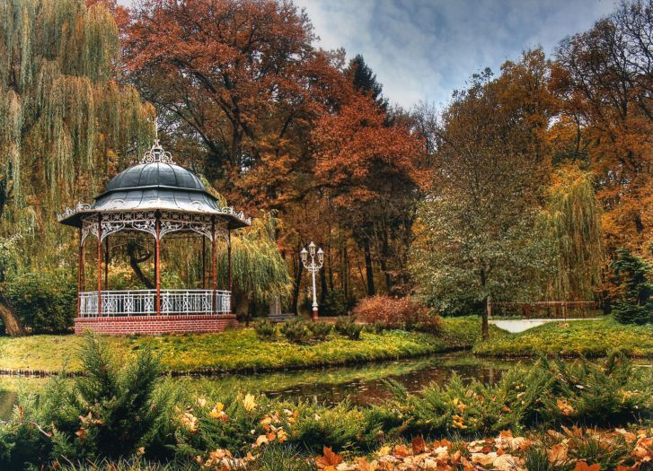

Ciekawa stronka o Pile
 Piła to miasto malowniczo położone w dolinie Gwdy nad rzeką Gwdą, 11 km powyżej jej ujścia do Noteci. Wielkim atutem przyrodniczym i turystycznym Piły są sporej wielkości obszary leśne wchodzące w obręb ośrodka miejskiego. Nazwa miasta pochodzi prawdopodobnie od tartaku i licznych pożarów, które ciężko doświadczały mieszkańców. Pierwsza wzmianka pisana pochodzi z 1449 r. i wymienia Piłę jako miasto królewskie. Ponadto w roku 1513 Piła otrzymała potwierdzenie nadania prawa magdeburskiego wystawionego przez króla Zygmunta Starego (1467–1548). Mieszkańcy trudnili się eksploatacją okolicznych lasów, a także rzemiosłem i handlem. Związane to było z charakterem średniowiecznej osady usytuowanej w pobliżu puszczy. W 1605 r. ośrodek miejski został przekazany jako „oprawa posagowa” królowej Konstancji, małżonce króla Zygmunta III Wazy (1566–1632). Piła ucierpiała nie tylko z powodu licznych klęsk żywiołowych, ale przede wszystkim podczas szwedzkiego najazdu (1655–1660), kiedy miasto zostało obrócone w perzynę. W XVII w. dostrzeżono walory ekonomiczne rozwoju lukratywnego sukiennictwa. Wiek później nastąpił również rozkwit jedwabnictwa. Już po I rozbiorze Polski w 1772 r. Piła znalazła się w granicach państwa pruskiego. Na krótko funkcjonowała w napoleońskiej namiastce wolności — Księstwie Warszawskim (1807–1815). Po tym okresie ponownie przeszła pod panowanie pruskiego zaborcy. Do 1945 r. jej niemiecka nazwa brzmiała Schneidemühl. Mimo silnego naporu żywiołu niemieckiego w Pile działały polskie organizacje gospodarcze, kulturalne i oświatowe. Pierwsze połączenia kolejowe z Krzyżem i Bydgoszczą miasto zyskało w połowie XIX w. Jako ciekawostkę warto dodać, iż do końca 1851 r. kolej przewiozła 57.122 pasażerów i 8460 ton towarów. Pilska magistrala kolejowa znajdowała się na ważnej trasie łączącej Berlin z Królewcem. W latach 1913–1915 wybudowano tutaj niemiecką filię fabryki samolotów Albatros Fleugzeugwerke. Zakłady w czasie trwania I wojny światowej (1914-1918) produkowały około 100 samolotów miesięcznie i zatrudniały około 2500 tys. osób. Piła utrzymywała spory garnizon wojskowy, który stanowił bazę wypadową dla przeciwdziałania Powstaniu Wielkopolskiemu (1918–1919). Po I wojnie światowej Piła nadal pozostawała w obrębie granic zachodniego sąsiada. W 1922 r. utworzono tutaj wicekonsulat Rzeczypospolitej Polskiej, który podniesiony do rangi konsulatu funkcjonował od 1930 r. Dopiero 14 lutego 1945 r. po ciężkich walkach i zdobyciu bronionej przez 25-tysięczny garnizon twierdzy, miasto powróciło do Polski. W wyniku zaciętych walk miasto zostało zniszczone w 75%, ale efektem zwycięstwa był powrót do macierzy po długich 173 latach. W latach 1975–1998 miasto było stolicą województwa pilskiego, a dzisiaj jest czwartym co do wielkości ośrodkiem miejskim w Wielkopolsce. Obecnie Piła jest ośrodkiem przemysłowym, usługowym oraz ważnym węzłem komunikacyjnym. Po reformie administracyjnej kraju Piła jest stolicą powiatu od 1 stycznia 1999 r. W centralnym punkcie miasta na placu Zwycięstwa stoi pomnik Tysiąclecia Polski i powrotu Ziem Zachodnich do Macierzy z 1966 r. Autorem monumentu jest Jerzy Sobociński. Przy ul. Browarnej 7 odnajdujemy Muzeum Okręgowe usytuowane w budynku z poł. XIX w. nawiązującego do willowego budownictwa włoskiego. Można tutaj oglądać zbiory z przeszłości miasta obejmujące dziedziny archeologii, etnografii i historii. Przy ulicy odnajdujemy dom z muru pruskiego, w którym prawdopodobnie urodził się wspomniany wyżej Stanisław Staszic. Obecnie funkcjonuje tutaj Muzeum Biograficzne jego imienia. Niedaleko kościół pw. św. Stanisława Kostki z pocz. XX w. W zachodniej części centrum neobarokowy kościół św. Rodziny z 1912–1915 r., z wieżami zwieńczonymi hełmami z latarniami oraz park miejski z 1900 r. W parku postawiono popiersie Stanisława Staszica, a sam 12 hektarowy kompleks zieleni nazwano imieniem tego zasłużonego księdza. Przy ul. Ludowej 20 kościół pw. św. Antoniego Padewskiego z 1929–1930 r. Świątynia słynie z największego w Europie drewnianego krucyfiksu, wykonanego z jednego kawałka drewna o wys. 7,5m. Ciekawym zabytkiem architektury przemysłowej jest dawna parowozownia pilska wybudowana w latach 1870–1874, zwana popularnie Okrąglakiem. Obecnie jest to jedyny zachowany w oryginalnym kształcie obiekt tego typu w Polsce.Przy Alei Niepodległości 2 współczesna Wyższa Szkoła Biznesu mieści się w klasycystycznym budynku loży masońskiej z połowy XIX w. Przy kilku szlakach jeszcze w granicach miasta położony jest Rezerwat Krajobrazowy Kuźnik.
| Ludność | Rok |
| 75994 | 1995 |
| 75114 | 2005 |
| 74140 | 2015 |